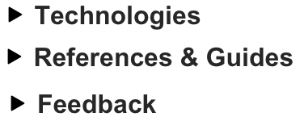
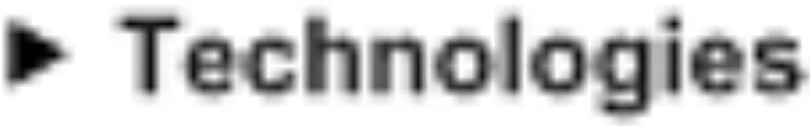

Images of text
Avoiding images of text
Images of text are more likely to distort and pixelate when resized and can be problematic for mobile users and users of low vision. In situations where images of text must be used, the text alternative must contain the same text presented in the image.
It is good design practice to use real text, formatted and styled with CSS to fit the design rather than an image of text. Actual text can be modified, resized without losing clarity to suit the reading preferences of users and is more flexible than images.
Unless the image of text is essential or customizable, images should not include informative text. Text that is part of a logo or brand name is considered essential.
Good example: Text styled with CSS
In this example, real text styled with CSS is used rather than an image of text. The CSS properties are solely responsible for font and text styling, spacing and layout.
Example begins
Accessibility at your fingertips
Example ends
CSS
Code begins
<p class="checker">Accessibility at your fingertips</p>
.checker {
border: 2px solid black;
background: #aa061a;
margin: auto;
padding: 20px;
padding-top:10px;
text-align: center;
text-shadow: 5px 5px 5px #620915;
font-size:45px;
color:white;
}Code ends
Bad example: Image of text
Avoid images of text unless they are essential (like a logo) or customizable. In the example below, three links nest images of text.
Screen magnification users may have difficulty reading an image of text when enlarged and pixelated, as shown in the image below.
Mathematical expressions
Designing with mathematical expressions
HTML lacks markup for mathematical expressions as structures, and there is no simple way to produce anything essentially two-dimensional beyond superscripting or subscripting.
There are two approaches:
- Use an image with alt text or long description describing the math expression.
- Tag the math expression semantically in MathML and use a JavaScript math library.
Approach 1: Use an image with alt text describing the math expression
Images of math expressions should only be used when math is an exception to the regular content of the website. In these cases, the <img> element’s alt attribute value should communicate the math expression, unless more than 150 characters is required, in which case a long description should be used. In the example below, the image displays a recurring decimal number and the alt text is “zero point one, recurring”
Example begins

Example ends
HTML
Code begins
<img src="recurring.png" alt="zero point one, recurring">Code ends
Approach 2: Use MathML
The preferred method for capturing math expressions as semantic, accessible content is with the markup language MathML. MathML markup allows user agents to determine the structure of math expressions in a machine-readable way.
Most web browsers need plugins to render MathML correctly for presentation, such as the open-source MathJax library, which provides support for display and additional accessibility features. JavaScript math libraries commonly support math expressions written in Tex and LaTeX and AsciiMath, not just MathML.
In the example below, MathML communicates a math expression with semantic markup and proper syntax to assistive technologies like screen readers. MathJax renders it for the screen with the correct typesetting.
Example begins
Example ends
View MathML
Code begins
<head>
[…]
<script type="text/javascript" src="http://cdn.mathjax.org/mathjax/latest/MathJax.js?config=TeX-AMS-MML_HTMLorMML"></script>
</head>
<body>
<math display="block" xmlns="http://www.w3.org/1998/Math/MathML">
<mrow>
<mi>E</mi><mo>=</mo>
<mfrac>
<mrow>
<mn>2</mn><mi>π</mi><mi>h</mi>
<msup>
<mi>c</mi>
<mn>2</mn>
</msup>
</mrow>
<mrow>
<msup>
<mi>λ</mi>
<mn>5</mn>
</msup>
<mrow>
<mo>(</mo>
<mrow>
<msup>
<mi>e</mi>
<mrow>
<mi>h</mi><mi>c</mi><mo>−</mo><mi>λ</mi>
<msub>
<mi>k</mi>
<mi>b</mi>
</msub>
<mi>T</mi>
</mrow>
</msup>
<mo>−</mo><mn>1</mn>
</mrow>
<mo>)</mo>
</mrow>
</mrow>
</mfrac>
</mrow>
</math>Code ends
Source: Penn State MathML Test Page